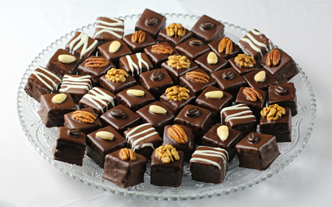

Van az a dominó néven kapható kicsit mézeskalácsos, kicsit zselés, kicsit marcipános süti.
Ez nagyon hasonló hozzá és persze nagyon finom is.
Pici türelmet igényel az elkészítése, de megéri kipróbálni. :)

Hozzávalók
Birsalmazselé:
1 kg birs
3 db fahéjrúd
10 db szegfűszeg
3 db csillagánizs
3 csomag zselésítő befőzőszer (1:1)
1 kg cukor (kb)
Dominosteine:
130 g méz
30 g cukor
40 g vaj
100 g étcsokoládé a tésztába
150 g finomliszt
1 teáskanál mézeskalács fűszerkeverék
1,5 teáskanál sütőpor
csipet só
1 FUCHS SZABADTARTÁSOS TOJÁS
6 db lapzselatin
4 ek citromlé
100 g dió
200 g marcipán
4 ek rum
Elkészítése
A birsalmákat alaposan megmossuk és hámozatlanul nagyobb darabokra vágjuk. A fűszerekkel egy
edénybe
tesszük, majd felöntjük annyi vízzel, ami épp ellepi.
Lassú tűzön 2 óra alatt puhára főzzük. Egy éjszakát pihentetjük.
A birsalmákat a lével együtt átpréseljük egy tiszta konyharuhán, majd a léhez hozzákeverjük a
zselésítőszert, illetve deciliterenként 100 g cukrot.
Felforraljuk és további 4 percig főzzük, majd zselépróbát végzünk. Tiszta üvegekbe töltjük a
birsalmazselét,
és azonnal lezárjuk. 5 percig lefelé fordítjuk az üvegeket, majd alaposan bebugyolálva kihűtjük.
A sütőt 180 fokra előmelegítjük. Egy sütőkeretet (20*30 cm) sütőpapírral kibélelünk.
A mézeskalácstésztához a mézet, cukrot és a vajat felfőzzük, és kissé kihűtjük. A csokoládét
durvára vágjuk,
majd a még meleg mézmasszába keverjük.
A lisztet, mézeskalács fűszerkeveréket, sütőport és egy csipet sót egy tálba szitáljuk. A
mézmasszát és a
tojást
alaposan hozzákeverjük. A tésztát rögtön a formába öntjük, simára lapítjuk és 12-15 percig
sütjük. A
formában hagyjuk
kihűlni.
A zseléhez a zselatint hideg vízbe áztatjuk. 600 g birsalmazselét a citromlével felfőzünk és
simára
keverünk. A
kinyomkodott zselatint ebben oldjuk fel. A zselét kissé kihűtjük, majd a mézeskalácstésztára
öntjük. Ha a
zselé túl
folyékony, kifolyik a keretből. Egy éjszakán át hűtőszekrényben hagyjuk szilárdulni.
A diót egy késes aprítóban nagyon apróra vágjuk. Egy tapadásmentes serpenyőben nagyon rövid idő
alatt
megpirítjuk, amíg
illatozni kezd, majd kihűtjük.
A marcipánt durvára reszeljük (jobban sikerül, ha a marcipánt előtte kicsit lefagyasztjuk).
A diót, marcipánt és rumot egy sima masszává gyúrjuk (ez egy kicsit ragadós lehet). Irattartó
fóliában egy
20*30-as
téglalappá (szerencsénk van, mert ekkora egy A/4-es lap mérete) nyomjuk vagy kinyújtjuk. A fólia
2 oldalát
kivágjuk és a
zselére fordítjuk a marcipánt.
A süteményt kivesszük a formából.
A tortabevonót durvára törjük és vízgőz felett felolvasztjuk. A csokoládé nem lehet melegebb 37
foknál.
A süteményt 3*3 centiméter nagyságú kockákra vágjuk. Ehhez segítség lehet egy 3 cm széles
papírlap. A
kockákat az
olvasztott csokoládéba mártjuk.
Tetszés szerint díszíthetjük a dominókat. Hűvös és száraz helyen tárolva egy dobozban 1 hétig
áll el.